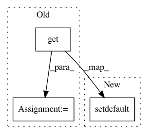

23475fbc1befccbeaf3717383a0f824ea83fef96,librosa/onset.py,,onset_detect,#Any#Any#Any#Any#,11
Before Change
// Default values for peak picking
// Taken from "MAXIMUM FILTER VIBRATO SUPPRESSION FOR ONSET DETECTION"
kwargs["pre_max"] = int( kwargs.get( "pre_max", .03*sr/hop_length ) )
kwargs["post_max"] = int( kwargs.get( "post_max", .03*sr/hop_length ) )
kwargs["pre_avg"] = int( kwargs.get( "pre_avg", .1*sr/hop_length ) )
kwargs["post_avg"] = int( kwargs.get( "post_avg", .07*sr/hop_length ) )
kwargs["delta"] = kwargs.get( "delta", 2 )
kwargs["wait"] = int( kwargs.get( "wait", .03*sr/hop_length ) )
After Change
// Default values for peak picking
// Taken from "MAXIMUM FILTER VIBRATO SUPPRESSION FOR ONSET DETECTION"
kwargs.setdefault("pre_max", 0.03*sr/hop_length ) // 30ms
kwargs.setdefault("post_max", 0.03*sr/hop_length ) // 30ms
kwargs.setdefault("pre_avg", 0.10*sr/hop_length ) // 100ms
kwargs.setdefault("post_avg", 0.07*sr/hop_length ) // 70ms
kwargs.setdefault("delta", 2 )
In pattern: SUPERPATTERN
Frequency: 7
Non-data size: 3
Instances
Project Name: librosa/librosa
Commit Name: 23475fbc1befccbeaf3717383a0f824ea83fef96
Time: 2013-12-06
Author: brm2132@columbia.edu
File Name: librosa/onset.py
Class Name:
Method Name: onset_detect
Project Name: craffel/mir_eval
Commit Name: d4246414c8a832262832c85d53a16bb70bb2ed7a
Time: 2016-02-22
Author: justin.salamon@gmail.com
File Name: mir_eval/transcription.py
Class Name:
Method Name: evaluate
Project Name: nilmtk/nilmtk
Commit Name: 8bc38a47c7b783a847a9594d247e84910ee05fa3
Time: 2014-12-15
Author: jack-list@xlk.org.uk
File Name: nilmtk/metergroup.py
Class Name: MeterGroup
Method Name: load
Project Name: jazzband/django-debug-toolbar
Commit Name: edd9d828bbeebc867710d5e078c1b0f8e80dc5b6
Time: 2013-11-24
Author: aymeric.augustin@m4x.org
File Name: debug_toolbar/panels/__init__.py
Class Name: Panel
Method Name: record_stats
Project Name: analysiscenter/batchflow
Commit Name: a7c2949f1544f9b6e27ec36cd621a5c36e7a6299
Time: 2019-08-15
Author: 7520522+a-arefina@users.noreply.github.com
File Name: batchflow/pipeline.py
Class Name: Pipeline
Method Name: gen_rebatch
Project Name: nilmtk/nilmtk
Commit Name: 8a5013ce5cef105bed8341bc043c97cd803cd233
Time: 2014-12-18
Author: jack-list@xlk.org.uk
File Name: nilmtk/metergroup.py
Class Name: MeterGroup
Method Name: dataframe_of_meters
Project Name: dpressel/mead-baseline
Commit Name: dd9bde058aa6e797935483133c3b59f3a72d1e55
Time: 2019-10-18
Author: blester125@users.noreply.github.com
File Name: python/baseline/pytorch/classify/model.py
Class Name: NBowBase
Method Name: init_stacked